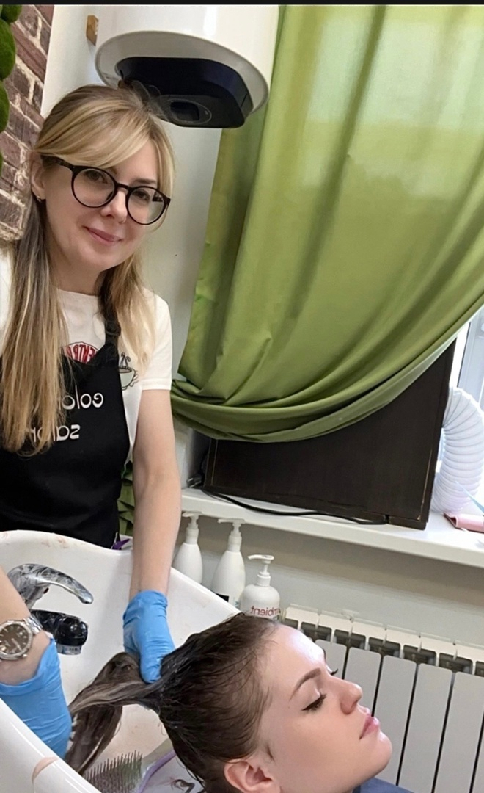
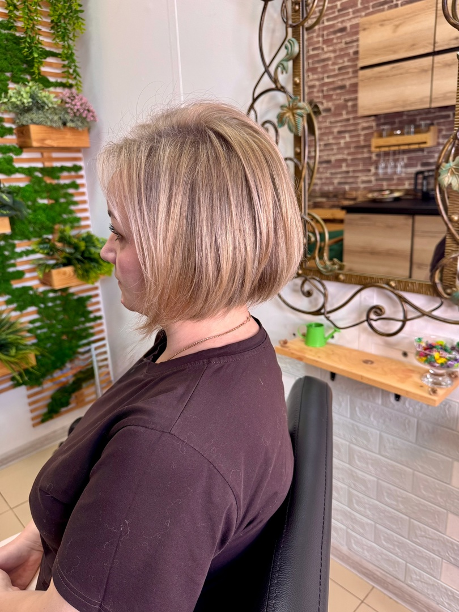

До курса доход Елены Терентьевой, парикмахера-колориста из Омска, колебался, стабильностью и не пахло. Клиентов хватало, но их число и качество оставляли желать лучшего. После курса доход удвоился: посты стали регулярными, реклама — ненужной. Теперь клиентский поток под контролем, и жизнь заметно улучшилась.
— Расскажи, что было до курса, какой средний доход был в месяц? Сколько клиентов?
— Уже продвигалась довольно успешно, клиенты были, но не было стабильности. Доход прыгал. На курс шла с целью удвоить доход.
— За какой период ты прошла курс? Все ли в уроках было просто и понятно? Если были сложности, то с чем?
— Курс я прошла очень быстро, потому что я не новичок и мне было все понятно.
— Ты самостоятельно проходила? Получается, что ты ранее какой то еще курс проходила или это были самостоятельные телодвижения?
— Ранее я проходила несколько курсов. Курсы Михаила Христосенко, вообще мимо, вообще ничего оттуда не взяла. Жалко потраченных денег(. В параллель с вашим курсом был курс Артема Любимова. Вот с этих двух курсов я и взяла по максимуму, что можно было.
— Супер, сейчас как часто пишешь посты, крутишь ли рекламу? Как клиенты приходят?
— Рекламу я не использую вообще. Посты выкладываю регулярно, но когда не нужны клиенты, тогда не выкладываю. Потому что как только выложишь пост, так записи идут)

— Огонь)
— Расскажи, как изменилась твоя жизнь после увеличения дохода? Что стала себе покупать, позволять? Как чувствовать себя?
— Офигенно стала себя чувствовать. Чувствуешь себя свободной, понимаешь, что можешь себе позволить, то что раньше не могла.
Доход увеличился – покупаешь, что хочешь, ездишь куда хочешь.
Если не нравится человек, я корректно могу отказаться от работы с ним, потому что понимаю, что сейчас она зависит от меня, а не я от нее.
Кстати клиентов больше, чем достаточно, доход как и планировала - удвоила)
— Крутышка) И последний вопрос, можешь сказать, сколько у тебя доход за последний год? В цифрах?

— В прошлом году я заработала 500 000 за год, в этом году 1 500 000 руб. Так, что рост определенно есть)
— Спасибо тебе большое за ответы! Рада была пообщаться и желаю дальнейшего роста)